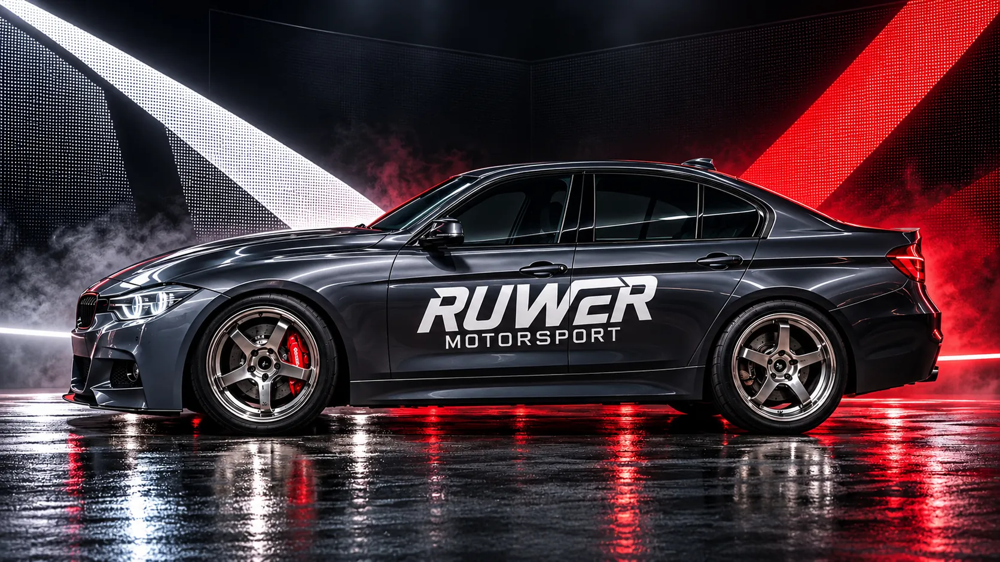
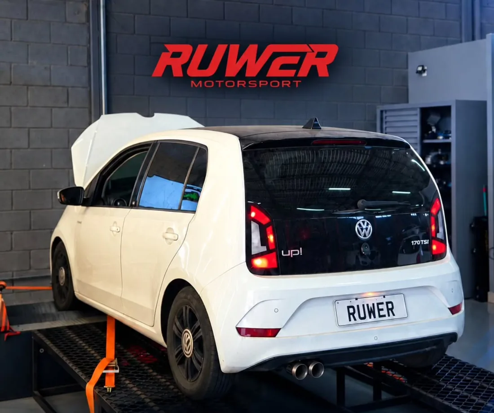
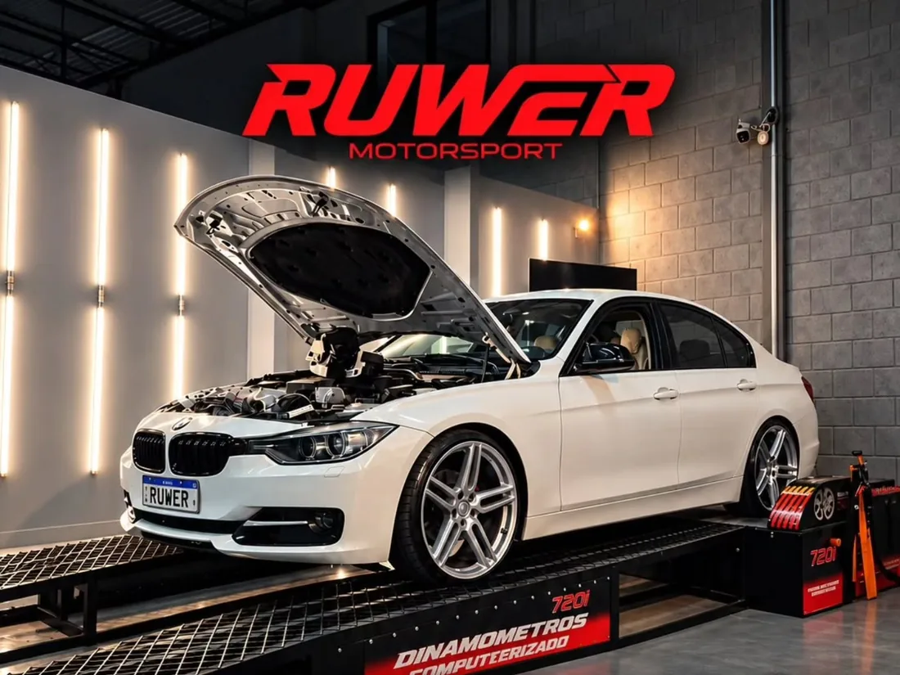
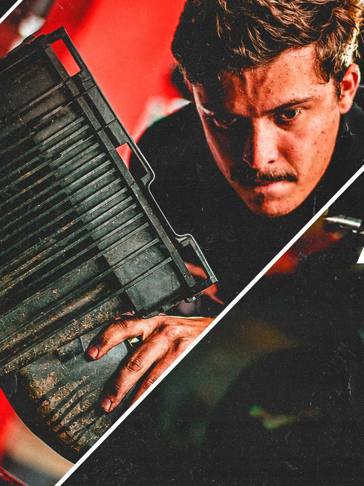
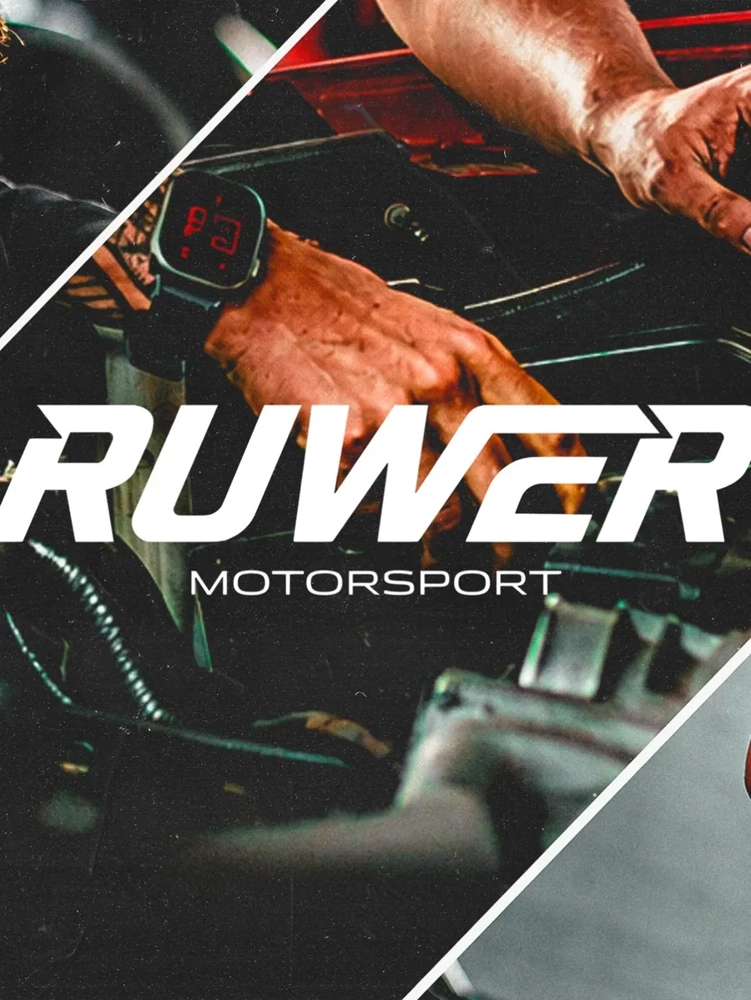
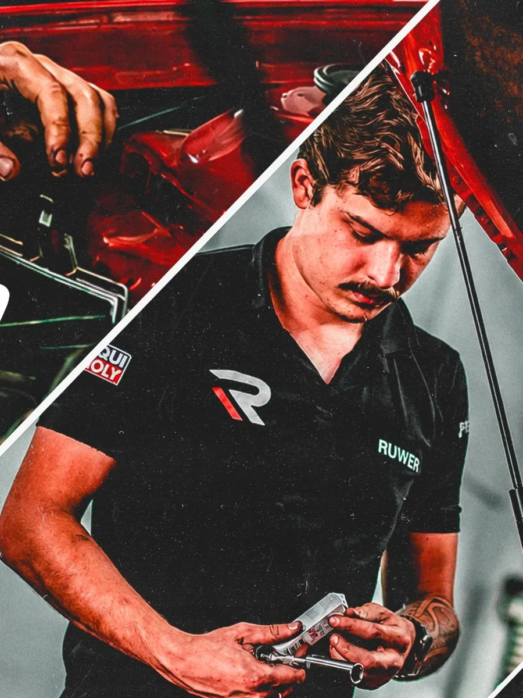
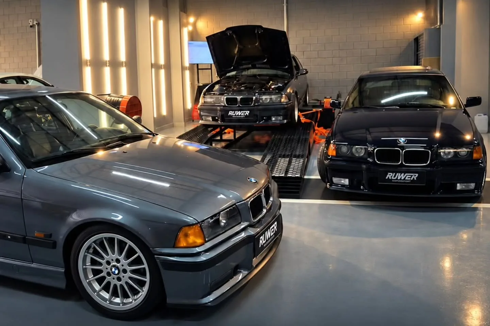

Potência que aparece no dyno.
Remap, escape e mecânica de precisão para carros que merecem mais. Cada ajuste é medido antes e depois, no nosso dinamômetro.
Agora é a vez do seu carro.
Agendar avaliação
O que a Ruwer faz no seu carro
Cinco serviços, um padrão: nada sai da oficina sem medição e sem teste.
Agendar avaliaçãoRemap de ECU
Mapa de injeção, ignição e pressão de turbo ajustado ao seu carro e ao combustível que você usa.
Dinamômetro
Medimos potência e torque antes e depois. Você recebe o resultado da medição.
Escape e admissão
Downpipe, catback e filtros esportivos instalados e testados, com o ganho conferido no dyno.
Suspensão e freios
Coilovers, geometria e kits de freio para a potência chegar ao asfalto com controle.
Mecânica de precisão
Diagnóstico com scanner, revisões e reparos com peças de qualidade, por quem prepara motores.
Resultados reais.
Medidos no dyno.
Quatro carros que passaram pela Ruwer. A potência está em whp, a medida na roda do carro.


Cada carro tem um resultado. O ganho depende do modelo, do combustível e das peças, e é sempre medido no dyno antes da entrega.
Da avaliação
à entrega
Antes de qualquer remap, a gente verifica a saúde do motor. Preparação bem feita começa com o carro pronto para receber a calibração.
Avaliação
Você conta o objetivo. A gente escaneia o carro e confere o estado do motor.
Projeto
Definimos o pacote, a meta de potência, o prazo e o valor antes de começar.
Instalação
Peças instaladas e conferidas na baia, com ferramenta calibrada.
Dyno e calibração
O carro sobe no dinamômetro. Ajustamos o mapa até a curva ficar como planejada.
Entrega
Carro lavado, test-drive e o resultado da medição na sua mão.
Quem cuida do seu carro
Cada carro passa pelas mãos da equipe da Ruwer, do diagnóstico à entrega.



A oficina em Brasília
Dinamômetro no centro, piso epóxi e luz de LED. É aqui que cada carro é preparado e medido.

Dúvidas antes de agendar
O remap afeta a garantia do carro?
Pode afetar. Depende da marca e do contrato da sua garantia. Na avaliação a gente explica o que muda no seu caso, antes de qualquer serviço.
Dá para voltar ao mapa original?
Sim. Guardamos o arquivo original da sua ECU antes de qualquer alteração, e o mapa pode ser regravado.
Quanto custa?
Depende do carro, do stage e das peças. Você recebe o valor fechado depois da avaliação, antes de autorizar o serviço.
Meu carro aceita preparação?
Mande marca, modelo e ano pelo WhatsApp e confirmamos se ele aceita o serviço que você quer.
Seu carro na próxima vaga do dyno
Conte o modelo e o que você quer. A mensagem já vai pronta para o nosso WhatsApp.